GOLUX의 목표는 럭셔리 쇼핑 경험을 더 감각적이고 기억에 남는 브랜드 경험으로 확장하는 것이다. 제품 자체의 가치뿐 아니라 패키지, 컬러, 공간, 디지털 화면, 고객 응대물까지 하나의 일관된 이미지로 연결하는 데 중점을 둔다. 오렌지와 핫핑크를 활용한 강한 컬러 시스템은 고객이 브랜드를 빠르게 인식하고 기억할 수 있도록 돕는다. 웹사이트와 매장에서는 패션 제품을 큐레이션하는 브랜드의 전문성과 세련된 취향을 함께 전달한다. 최종적으로는 GOLUX를 단순한 패션 브랜드가 아니라, 고급스러운 라이프스타일과 자신감 있는 취향을 상징하는 브랜드로 자리 잡게 하는 것을 목표로 한다.
Portfolio / Brand Identity
GOLUX
GOLUX는 감각적인 럭셔리 패션 경험을 제안하는 프리미엄 라이프스타일 브랜드이다. 브랜드는 단순히 제품을 판매하는 것을 넘어, 쇼핑백을 들고 이동하는 순간부터 패키지를 열어보는 과정까지 하나의 세련된 경험으로 설계되어 있다. 전체적인 무드는 강렬한 오렌지와 핫핑크 컬러를 중심으로 구성되어 있으며, 럭셔리 브랜드가 가진 고급감에 젊고 대담한 에너지를 더한다. 패키지, 쇼핑백, 웹사이트, 매장, 카드, 스티커 등 다양한 접점에서 동일한 컬러와 로고 시스템을 적용해 강한 브랜드 인지도를 형성한다. GOLUX는 고급스러운 취향과 선명한 개성을 동시에 보여주는 컨템포러리 럭셔리 브랜드로 정리할 수 있다.
- Scope
- Brand Identity / Premium
- Studio
- BDLab
- Year
- 2026
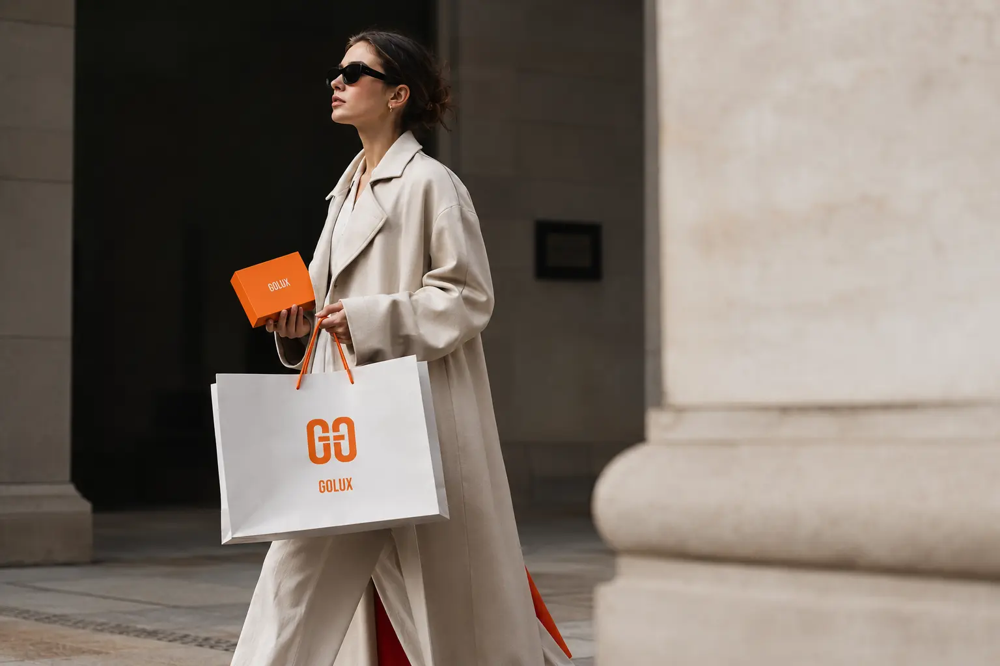
GOLUX의 핵심 메시지는 “YES, WE ARE GOLUX”로, 브랜드가 가진 자신감과 명확한 태도를 직접적으로 보여준다. 이는 고급스러운 제품을 조용히 제안하는 방식이 아니라, 강한 컬러와 선명한 문장으로 브랜드의 존재감을 드러내겠다는 의미를 담고 있다. “Curated luxury for those who know”라는 방향은 GOLUX가 단순한 유통 브랜드가 아니라, 취향을 아는 사람들을 위한 큐레이션 브랜드임을 강조한다. 브랜드 메시지는 복잡한 설명보다 짧고 강한 문장으로 구성되어 고객이 브랜드의 성격을 빠르게 이해할 수 있도록 돕는다. 전체적으로 GOLUX는 럭셔리, 큐레이션, 자신감, 감각적인 쇼핑 경험을 중심으로 브랜드 방향성을 전개한다.
GOLUX의 디자인은 강렬한 오렌지 컬러와 핫핑크 포인트를 중심으로 구성되어 있다. 전체적인 비주얼은 고급 패션 브랜드의 정제된 무드에 밝고 대담한 컬러를 결합해, 차분한 럭셔리보다 에너지 있는 럭셔리 이미지를 만든다. 쇼핑백과 박스는 넓은 컬러 면을 활용해 브랜드의 존재감을 강하게 보여주며, 로고는 중앙에 간결하게 배치해 고급스러운 균형감을 유지한다. 촬영 이미지에서는 화이트와 베이지 톤의 스타일링 위에 오렌지, 핑크 컬러를 포인트로 사용해 브랜드 컬러가 더욱 선명하게 드러난다. 디자인 전반은 세련된 패션 감도와 강한 브랜드 인지도를 동시에 확보하는 방향으로 설계되어 있다.
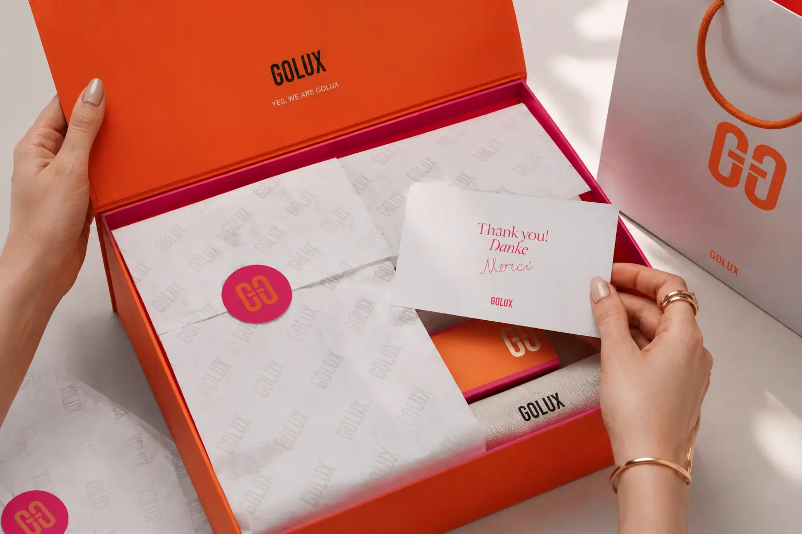
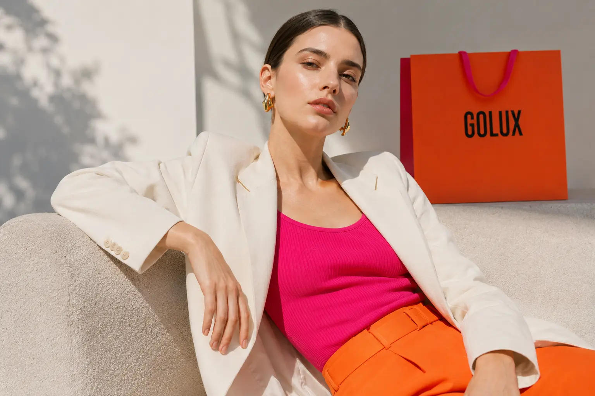
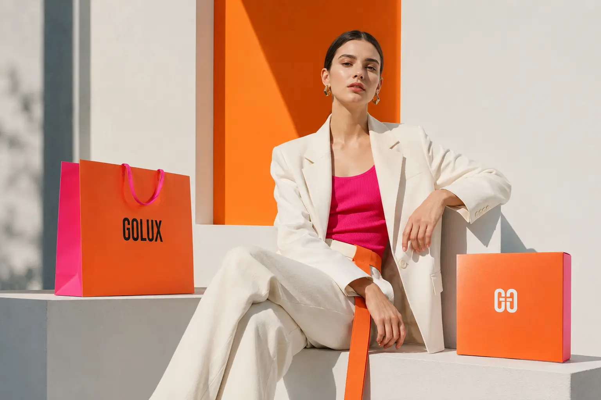
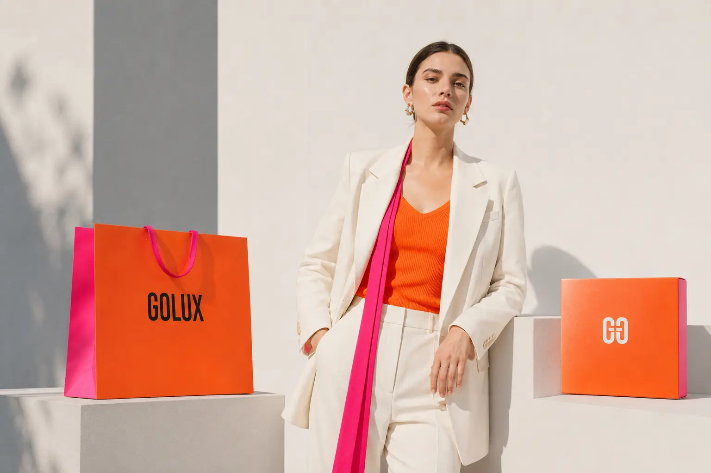
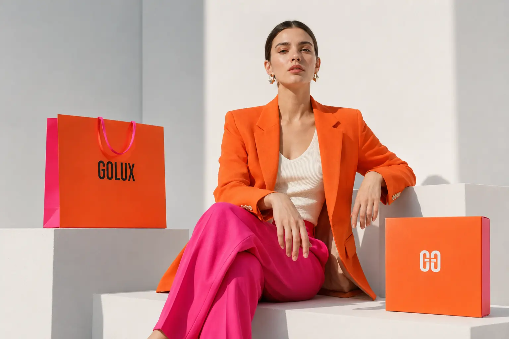
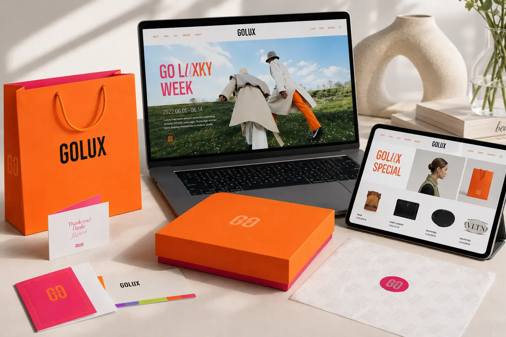
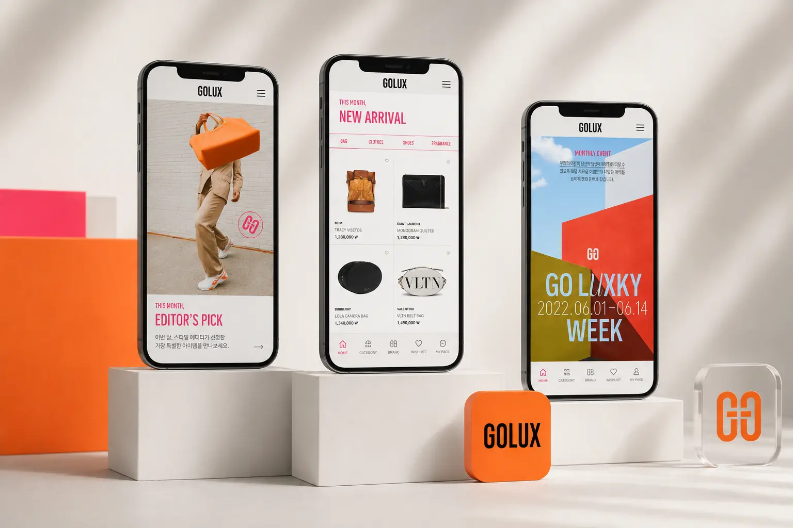
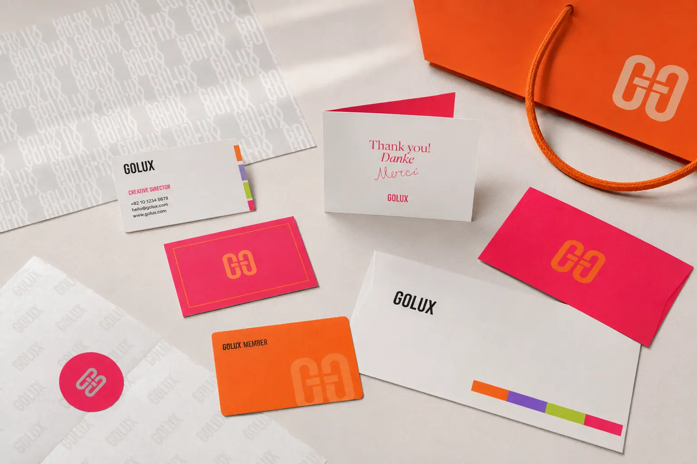
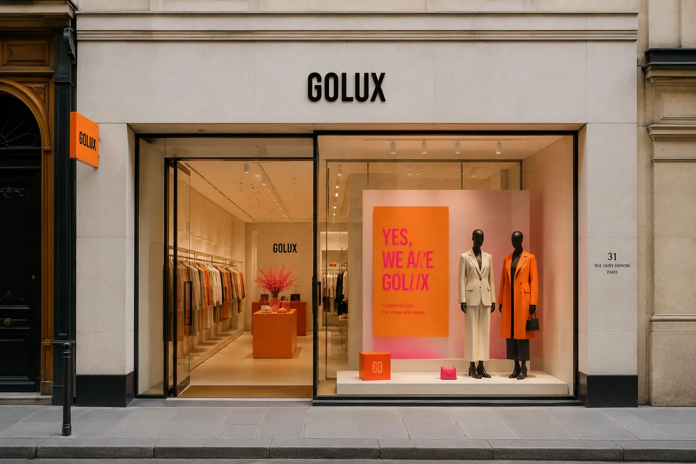
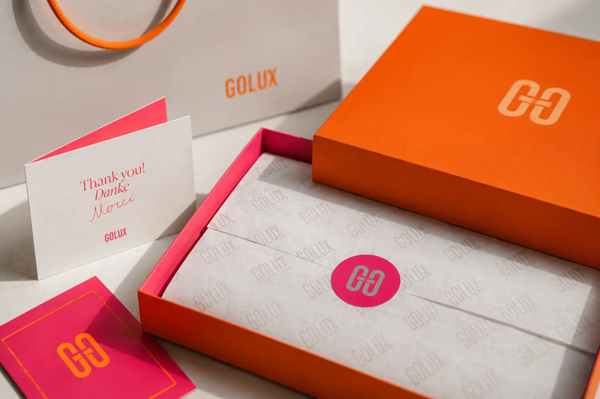